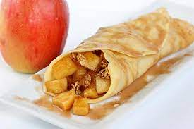

Recetas
Crepes de Manzana
Ingredientes (masa)
- 2 huevos
- 400ml de leche liquida
- 140gr de harina
- 1 pizca de sal
- 50gr de manteca
Ingredientes (relleno)
- 2 Manzanas
- 80gr de azúcar
- 5ml de esencia de vainilla
- 480ml de agua
Ingredientes (caramelo)
- 160gr de azúcar
- 40ml de agua
- 80ml de agua hirviendo

Preparación
- Verter en un bol los huevos y la leche, bate con batidor eléctrico por 2 min aproximadamente. Agregar la harina y sal, mezclar por 2-3 min hasta unificar todo y obtener una mezcla espesa y homogénea.
- Llevar una sarten al fuego y agregarle un trocito de la manteca reservada, repetir el proceso cada 2 o 3 crepes, mueve la manteca de forma que se reparta por toda la base para evitar que las crepes de manzana con caramelo se peguen.
- Verter ¾ de cucharon de la preparación de nuestras crepes dulces en la sarten y mover de forma que la mezcla cubra toda la superficie. Si los deseas más gruesos verter un cucharon completo en la sarten.
- Cuando los bordes se empiecen a dorar levantar la crepe y dar vuelta para cocinarlos del otro lado durante unos segundos. Si los levantas y notas que aún les falta o no están lo suficientemente dorados como te gusta déjalos un momento más al fuego.
- Acomodar en una fuente o un plato unos encima de los otros a medida que los vayas realizando hasta a cavar toda la mezcla de crepes.
- Para elaborar el relleno vamos a lavar, pelar y cortar en rodajas las manzanas. Llevamos las rodajas de manzana junto con el azúcar, la esencia de vainilla y el agua por encima, de forma que las cubra, todo a una olla o cacerola a fuego bajo-medio hasta que se ablanden y formen una especie de compota. Una vez listas retiramos del fuego.
- Para realizar el caramelo, vamos a colocar en un jarro el azúcar junto con el agua fría. Llevamos a fuego para que el azúcar comience a disolverse, moviendo de forma constante.
- Cuando tengamos el azúcar completamente disuelto y que haya tomado un color dorado, retiramos del fuego. Agregamos el agua hervida al caramelo y mezcla por un momento hasta unificar ambos ingredientes. Reservamos por un momento hasta el momento de utilizar.
- Para el armado tomamos una crepe, agregamos 2 cucharadas soperas de relleno y lo cierras. Cubrimos con una cucharada sopera de caramelo líquido.